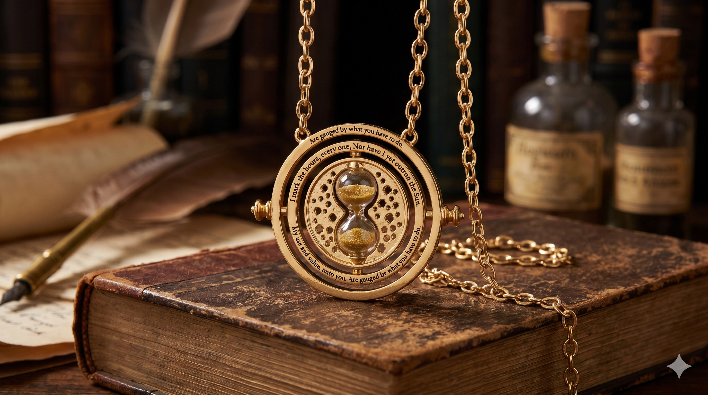

ARTIFACTS OF RENOWN
Throughout the history of magic, certain objects have transcended mere utility to become legends in their own right. These artifacts are born of profound magical theory, alchemical genius, or incredibly potent enchantments that baffle even the most learned spellcasters of the modern age. From ancient relics that control the passage of time to mirrors that reveal the deepest desires of the heart, these items represent the pinnacle of magical achievement.
Many of these legendary objects are carefully guarded, kept within the secure walls of the Ministry of Magic, hidden in the depths of Hogwarts, or passed down through ancient wizarding bloodlines. Their power is vast, and their stories are intertwined with the very fabric of wizarding history.

THE PHILOSOPHER’S STONE
An ancient, legendary substance with astonishing magical properties. Created by the renowned alchemist Nicolas Flamel, the blood-red stone is capable of transforming any base metal into pure gold.
However, its most famous and coveted property is its ability to produce the Elixir of Life, which makes the drinker immortal as long as they continue to consume it. The only known stone in existence was kept highly secure at Hogwarts before being destroyed to prevent it from falling into the hands of Lord Voldemort.
THE MIRROR OF ERISED
A magnificent, ornate mirror that shows the deepest, most desperate desire of a person's heart. Its name, "Erised," is "desire" spelled backwards, as is the inscription carved around the top: "Erised stra ehru oyt ube cafru oyt on wohsi."
While mesmerizing, the mirror provides neither knowledge nor truth, and men have wasted their lives sitting before it, entranced by illusions of what they cannot have. Albus Dumbledore later used its unique magic to hide the Philosopher's Stone.


THE PENSIEVE
A shallow stone or metal receptacle used to review and store memories. Adorned with complex runes, it holds silvery, luminous substance—thoughts and memories extracted from a wizard's mind using their wand.
The Pensieve allows one to plunge directly into a memory, experiencing it from a third-person perspective and noticing details that the original observer might have missed. It is an invaluable tool for untangling complex thoughts or exploring the past.
THE TIME-TURNER
A delicate magical device that allows the user to travel backward in time. It typically resembles an hourglass on a necklace, and each turn of the hourglass reverses time by one hour.
Time-Turners are highly regulated by the Ministry of Magic due to the extreme danger of altering history. Wizards who tamper with time risk catastrophic consequences, including madness, erasing their own existence, or unspooling the timeline itself.


THE GOBLET OF FIRE
A roughly hewn wooden cup that acts as the impartial judge for the Triwizard Tournament. When activated, it burns with dancing blue-white flames.
Students wishing to compete place their names into the Goblet. The magical contract forged by the Goblet is binding; once chosen, a champion must see the tournament through to the end, making its selection process a profoundly solemn magical vow.
THE MARAUDER’S MAP
A magical document that reveals all of Hogwarts School of Witchcraft and Wizardry. Beyond simply showing classrooms and hallways, it displays every secret passage and tracks the exact location of every person within the castle grounds in real-time.
Created by Remus Lupin, Peter Pettigrew, Sirius Black, and James Potter, the map is activated with the phrase "I solemnly swear that I am up to no good," and wiped clean with "Mischief managed," hiding its secrets from unsuspecting professors.


THE SORTING HAT
A battered, frayed, and remarkably sentient pointed hat that determines the Hogwarts house of every new student. Originally belonging to Godric Gryffindor, it was enchanted by the four founders to possess their combined intelligence.
Using Legilimency, the Hat reads the mind and character of the wearer, considering their traits, potential, and even their choices, before shouting out its decision to the Great Hall. It also serves as the guardian of the Sword of Gryffindor.
THE DELUMINATOR
Also known as the Put-Outer, this device resembles a standard silver cigarette lighter. Created by Albus Dumbledore, clicking it absorbs the light from any nearby light source, plunging the area into darkness. Clicking it again returns the light to its original location.
Beyond its light-stealing properties, Dumbledore augmented it with profound and mysterious magic: it has the power to guide the bearer back to their friends if their name is spoken, translating emotional bonds into physical light to show the way.


THE TRIWIZARD CUP
A gleaming silver trophy awarded to the winner of the Triwizard Tournament. It acts as the ultimate goal of the third and final task, placed deep within an enchanted maze.
The first champion to touch the cup claims victory for their school. However, its magic can be manipulated, as seen when it was illicitly turned into a Portkey to transport Harry Potter and Cedric Diggory to a graveyard in Little Hangleton.
THE REMEMBRALL
A small, glass sphere roughly the size of a large marble, filled with white smoke. It serves as a magical aid for the forgetful.
When held tightly, the smoke inside glows a vibrant scarlet if the holder has forgotten to do something. Its fatal flaw, however, is that while it helpfully reminds you that you have forgotten something, it offers no clues as to what that forgotten thing actually is.


THE FOE-GLASS
A Dark detector designed to reveal an individual's enemies. When an enemy is far away, they appear merely as shadowy, indistinct figures lurking in the background of the glass.
As the enemy draws near or their malicious intent becomes imminent, their figures move into sharper focus until the whites of their eyes are visible. It is a vital tool for paranoia-stricken wizards and aurors alike.
THE SECRECY SENSOR
A delicate object resembling a golden television aerial. It is highly sensitive to concealment and lies, vibrating rapidly and emitting a buzzing sound when it detects deceit or hidden magical objects.
While useful for security, it is often overly sensitive at Hogwarts due to the sheer volume of petty student lies and mundane secrets, rendering it difficult to distinguish between a student hiding a prank and actual dark magic.


PROPHECY ORBS
Spun-glass spheres kept in the Hall of Prophecy within the Department of Mysteries. Each orb contains a record of a prophecy spoken by a true Seer.
These spheres are protected by immensely powerful magic: they can only be lifted from their pedestals by the individuals about whom the prophecy was made. Anyone else who attempts to touch one will be afflicted with instant and severe madness.